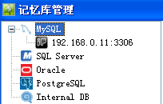
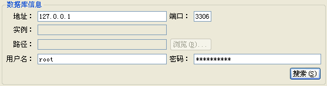
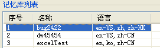
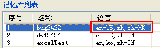
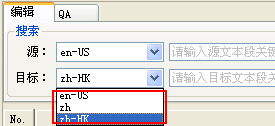

Heartsome TMX Editor 8 是Heartsome Translation Studio 8 记忆库的专用编辑软件。以下介绍二者的配套使用方法：
Heartsome Translation Studio 8 记忆库分文件型记忆库和服务型记忆库两类。
文件型记忆库
1、菜单“文件”-“连接记忆库”，选择二级菜单“文件型记忆库”。
2、在弹出的浏览选择框中，选择Heartsome Translation Studio 8 记忆库（.hstm）。
3、点击【确定】按钮后，编辑器将加载记忆库中所有的内容。
1、菜单“文件”-“连接记忆库”，选择二级菜单“服务型记忆库”。
2、在打开的服务型记忆库选择框中，在类型树上选择要连接的记忆库类型：

3、输入该类型的记忆库连接参数（IP地址、端口、用户、密码等），点击【搜索】按钮：

4、在搜索出的记忆库中，选中您需要编辑的那一个，单击右下角的【确定】按钮，即可加载该记忆库的所有内容。

1、Heartsome Translation Studio 8 记忆库是支持多语的，在连接服务型记忆库后的记忆库列表的“语言”列中可以看到语言的情况：
可以看到，“bug2422”这个记忆库包含“en-US”、“zh”、“zh-HK”3种语言。
2、当打开多语的记忆库后，您可以从“编辑视图”中的“源”和“目标”下拉列表中选择需要显示和编辑的语言对：

3、选择好语言对后，点击【搜索】即可加载显示该语言对的所有内容。
单击编辑器中源文单元格或译文单元格即可进入编辑模式。需要注意的是：记忆库的编辑是实时保存的，因此不需要手动保存。
同“TMX 翻译单元属性编辑”。
同“TMX 翻译单元批注编辑”。
同“TMX 无用内容清理”。